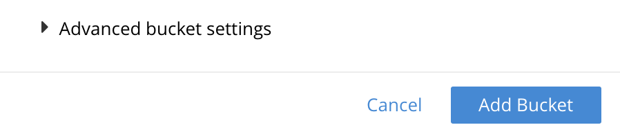

Auto-Compaction
Auto-Compaction settings determine the compaction process; whereby databases and their respective view-indexes are compacted.
Understanding Auto-Compaction
Auto-Compaction is enabled by default for all Couchbase buckets. However, settings can be overridden on a per bucket basis.
Auto-compaction settings affect on-disk data, and therefore do not apply to Ephemeral buckets.
Full and Cluster administrators can configure compaction settings with Couchbase Web Console, the Couchbase CLI, or the REST API.
Note that in Couchbase Server Enterprise Edition, auto-compaction does not apply to memory-optimized index storage, and there are no settings necessary for configuring the auto-compaction of Global Secondary Indexes using standard index storage. However, for installations of Couchbase Server Enterprise Edition running on Linux, note that hole punching is required to enable auto-compaction of Global Secondary Indexes using standard index storage. See Standard Index Storage, for information.
Configure Auto-Compaction with the UI
Instructions on accessing Auto-Compaction settings are provided below.
For a New Bucket
To access the auto-compaction settings-panel for an new, individual bucket, proceed as follows:
-
Access the Buckets screen provided by the Couchbase Web Console. Left-click on the ADD BUCKET tab:

-
When the Add Data Bucket dialog appears, add appropriate data into the initial fields; then left-click on the Advanced bucket settings tab:
The dialog now expands, and displays additional configuration-options.
-
Access the Auto-Compaction panel, and check the Override the default auto-compaction settings? checkbox:
The dialog expands again, and displays Auto-Compaction settings available for this bucket.
For an Existing Bucket
To access the auto-compaction settings-panel for an individual, existing bucket, proceed as follows:
-
Left-click on the information-row for the bucket, on the Buckets screen of Couchbase Web Console. When the Edit button appears, left-click on it:
This brings up the Edit Bucket Settings dialog.
-
Left-click on the Show advanced bucket settings tab.
-
Access the Auto-Compaction panel, and check the Override the default auto-compaction settings? checkbox. The dialog expands, thereby showing the available Auto-Compaction settings.
To Establish Defaults for All Buckets
To access the auto-compaction settings-screen that provides defaults for all buckets not otherwise assigned customized settings, proceed as follows:
-
Left-click on the Settings tab, in the vertical navigation-bar at the left-hand side.
-
When the Settings screen appears, left-click on the Auto-Compaction tab, on the horizontal control-bar at the top:
This brings up the Auto-Compaction screen.
Establishing Auto-Compaction Settings
The Auto-Compaction view of the Settings screen appears as follows. (Note that the Index Fragmentation settings are only displayed for Couchbase Server Community Edition.)
All settings on this screen are also provided on the dialogs whereby you establish custom-settings for an individual new or existing bucket — with the exception of the settings for Index Fragmentation, which can only be established on a cluster-wide basis.
Settings constitute conditions, which must be met for the compaction-process to be triggered. The settings are described below.
Database Fragmentation
The Database Fragmentation panel appears as follows:
Compaction is triggered when database-fragmentation reaches the point specified by means of this interface. You can specify the fragmentation-level as a percentage (the upper field, selected by checking the adjacent checkbox); or as a number of megabytes (the lower).
View Fragmentation
The View Fragmentation panel appears as follows:
Compaction is triggered when view-fragmentation reaches the point specified by means of this interface. You can specify the fragmentation-level as a percentage (the upper field, selected by checking the adjacent checkbox); or as a number of megabytes (the lower).
Time Interval
The Time Interval pane provides a number of settings whereby compaction is scheduled:
To set a time-interval during which compaction is permitted to run, check the checkbox at the top of the pane. Then, add a start and an end time into the interactive fields. Note that each left-hand field specifies the hour-of-the-day; while each right-hand specifies the minute-of-the-hour.
Checkboxes are provided to allow you to specify: first, that compaction can be aborted if the specified time is exceeded; secondly, that database and view compaction are executed simultaneously (implying a heavier processing and disk I/O load, during the compaction-process).
For example, the following, completed Time Interval pane specifies that compaction should run between 1:00 am and 2:30 am; should be aborted if not completed in time; and should feature parallel compaction of database and indexes:
Index Fragmentation
The Index Fragmentation panel, which is only available in Couchbase Server Community Edition, provides settings that cannot be overridden at individual bucket-level. The panel appears as follows:
This interface sets the write-strategy and trigger-point for compaction.
Select from the following options:
-
Append-only write mode with index fragmentation level trigger. Turns on append only writes for index-storage, and triggers the compaction-job based on the fragmentation-level of each index file. Check the checkbox, then specify a fragmentation-level as a percentage, in the interactive text-field.
-
Circular write mode with day + time interval trigger. Turns on writes with circular reuse for index-storage, and triggers the compaction-job based on a time-interval. To specify when compaction is permitted to run, select appropriate days of the week, by checking the appropriate checkboxes; then, select the start-time on each of those days; and optionally, an end-time.
Optionally, check the Abort compaction if run time exceeds the set time interval checkbox: if you do so, compaction is aborted if the specified end-time is exceeded.
Note that whenever you change the compaction settings for the index, the system starts the global secondary index process on all the nodes.
See Standard Index Storage for information on append-only and circular write modes.
Metadata Purge Interval
Sets the frequency of the metadata (or tombstone) purge interval, for Couchbase buckets only. The default value is three days.
The panel appears as follows:
Tombstones are records of expired or deleted items.
They include key and metadata.
Tombstones are used in Couchbase Server to provide eventual consistency of data between clusters.
The specified number of days will elapse before tombstones for expired or deleted items are permanently removed.
The default value is three days.
The permitted range of values is 0.04 to 60 (where 0.04 equals one hour, and 1 equals one day.
|
If you set this value too low, you may see inconsistent results in Views queries, such as deleted items appearing in a result set. You may also see inconsistent items across clusters, if XDCR has been set up between the clusters. If the metadata purge interval is set too low, it can also cause severe issues with transactions, especially for ephemeral buckets. If you set this value too high, it delays Couchbase Server from reclaiming disk space. |
The Metadata Purge Interval panel on this screen establishes a default purge interval for Couchbase buckets only. Therefore:
-
If a Couchbase bucket is left at its default setting, any change made here to the default value duly changes the frequency of metadata purges for that bucket.
-
If a Couchbase bucket has already been given a customized setting, no change made here to the default value has any effect on the frequency of metadata purges for that bucket. For information on providing customized settings, see Create a Bucket and Edit a Bucket.
-
Neither the default nor the customized frequency of metadata purges for any Ephemeral bucket is affected by changes made here. Note that although the default interval for Ephemeral buckets is, as with Couchbase buckets,
3, only per bucket interval-changes can be made, for Ephemeral buckets: the default interval for Ephemeral buckets cannot be changed globally.
For more information, see Storage Settings.
Configure Auto-Compaction with the CLI
To configure auto-compaction with the CLI, use the setting-compaction command.
/opt/couchbase/bin/couchbase-cli setting-compaction \
--cluster 10.143.192.101 \
--username Administrator \
--password password \
--compaction-db-percentage 30 \
--compaction-db-size 1024 \
--compaction-view-percentage 30 \
--compaction-view-size 1024 \
--compaction-period-from 00:00 \
--compaction-period-to 06:00 \
--enable-compaction-abort 1 \
--enable-compaction-parallel 0 \
--metadata-purge-interval 3 \
--gsi-compaction-mode circular \
--compaction-gsi-interval Monday,Wednesday,Friday \
--compaction-gsi-period-from 06:00 \
--compaction-gsi-period-to 09:00 \
--enable-gsi-compaction-abort 1The compaction-related flags correspond to the UI fields described above in Database Fragmentation and View Fragmentation; and also to the associated Time Interval fields. The GSI compaction mode is specified as circular; and other gsi-related flags correspond to the fields in the lower part of the Time Interval panel, which correspond to index compaction. Parallel compaction is disabled, with the --enable-compaction-parallel flag; and GSI compaction is enabled to abort, with the --enable-gsi-compaction-abort flag.
Configure Auto-Compaction with the REST API
To return current auto-compaction settings by means of the REST API, use the /settings/autoCompaction method.
curl -i -X GET -u Administrator:password \
http://127.0.0.1:8091/settings/autoCompactionIf successful, this returns a JSON document containing the current settings. Formatted, this might appear as follows:
{
"autoCompactionSettings": {
"parallelDBAndViewCompaction": true,
"allowedTimePeriod": {
"fromHour": 0,
"toHour": 2,
"fromMinute": 0,
"toMinute": 0,
"abortOutside": false
},
"databaseFragmentationThreshold": {
"percentage": 30,
"size": 536870912
},
"viewFragmentationThreshold": {
"percentage": 30,
"size": 536870912
},
"indexCompactionMode": "full",
"indexCircularCompaction": {
"daysOfWeek": "Monday,Wednesday,Friday",
"interval": {
"fromHour": 6,
"toHour": 9,
"fromMinute": 0,
"toMinute": 0,
"abortOutside": true
}
},
"indexFragmentationThreshold": {
"percentage": 30
}
},
"purgeInterval": 4
}See Getting Auto-Compaction Settings, for more information.
To modify auto-compaction settings, use the /controller/setAutoCompaction method:
curl -i -X POST http://10.143.192.101:8091/controller/setAutoCompaction \
-u Administrator:password \
-d databaseFragmentationThreshold[percentage]=30 \
-d databaseFragmentationThreshold[size]=1073741824 \
-d viewFragmentationThreshold[percentage]=30 \
-d viewFragmentationThreshold[size]=1073741824 \
-d allowedTimePeriod[fromHour]=0 \
-d allowedTimePeriod[fromMinute]=0 \
-d allowedTimePeriod[toHour]=6 \
-d allowedTimePeriod[toMinute]=0 \
-d allowedTimePeriod[abortOutside]=true \
-d parallelDBAndViewCompaction=false \
-d purgeInterval=3.0 \
-d indexCompactionMode=circular \
-d indexCircularCompaction[daysOfWeek]=Monday,Wednesday,Friday \
-d indexCircularCompaction[interval][fromHour]=6 \
-d indexCircularCompaction[interval][fromMinute]=0 \
-d indexCircularCompaction[interval][toHour]=9 \
-d indexCircularCompaction[interval][toMinute]=0 \
-d indexCircularCompaction[interval][abortOutside]=trueThis example establishes fragmentation thresholds and sizes for database and view, and specifies the time-period during which compaction should occur. It specifies that compaction be aborted if it should overrun this time-period. Parallel compaction for database and view is switched off. The tombstone purge interval is set to 3 days; and circular standard compaction is specified for particular days and hours.
See Setting Auto-Compaction, for more information.